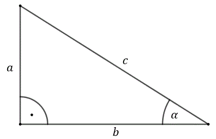

Jedynka trygonometryczna
Dla dowolnego kąta \(\alpha \) zachodzi równanie: \[\sin^{2}
\alpha +\cos^{2} \alpha =1\]
Dowód jedynki trygonometrycznej dla kąta ostrego w trójkącie prostokątnym
Weźmy dowolny
trójkąt prostokątny i zaznaczmy w nim kąt ostry \(\alpha \).  Z definicji funkcji trygonometrycznych wiemy, że: \[\sin \alpha
=\frac{a}{c}\qquad \text{oraz}\qquad \cos \alpha =\frac{b}{c}\] Zatem: \[\sin^{2} \alpha +\cos^{2}
\alpha = \left ( \frac{a}{c} \right )^2+\left ( \frac{b}{c} \right
)^2=\frac{a^2}{c^2}+\frac{b^2}{c^2}=\frac{a^2+b^2}{c^2}\] Z twierdzenia Pitagorasa wiemy, że:
\[a^2+b^2=c^2\] Zatem: \[\sin^{2} \alpha +\cos^{2} \alpha = \frac{a^2+b^2}{c^2} = \frac{c^2}{c^2}=1.
\ _\blacksquare \]
Wyjaśnienie sposobu zapisu
Wyrażenie \(\sin^{2} \alpha\), to \(\sin \alpha \) podniesiony
do drugiej potęgi. Czyli: \[\sin^{2} \alpha = (\sin \alpha)^2\] Zatem np. \(\sin \alpha =
\frac{2}{3}\), to: \(\sin^{2} \alpha = \left ( \frac{2}{3} \right )^2=\frac{4}{9}\).
Analogicznie interpretujemy \(\cos^{2} \alpha, \operatorname{tg}^2 \alpha \text{ i
}\operatorname{ctg}^2\alpha \) oraz wyższe potęgi funkcji trygonometrycznych.
Wzory na tangens i cotangens.
Dla dowolnego kąta \(\alpha \) (dla którego funkcje
trygonometryczne są określone) zachodzą wzory:
- \(\operatorname{tg} \alpha \cdot \operatorname{ctg} \alpha =1\)
- \(\operatorname{tg} \alpha =\frac{\sin \alpha }{\cos \alpha }\)
- \(\operatorname{ctg} \alpha =\frac{\cos \alpha }{\sin \alpha }\)
Powyższe wzory są prawdziwe dla każdego kąta ostrego \(\alpha \) oraz dla wszystkich kątów,
dla których funkcje są określone (tzn. nie pojawia się dzielenie przez \(0\) w mianowniku).
Dowód wzorów dla kąta ostrego w trójkącie prostokątnym
Weźmy dowolny trójkąt prostokątny i
zaznaczmy w nim kąt \(\alpha \). Z
definicji funkcji trygonometrycznych wiemy, że: \[\sin \alpha =\frac{a}{c}\qquad \text{oraz}\qquad
\cos \alpha =\frac{b}{c}\qquad \text{oraz}\qquad\operatorname{tg} \alpha =\frac{a}{b}\qquad
\text{oraz}\qquad \operatorname{ctg} \alpha =\frac{b}{a}\] Zatem: \[\operatorname{tg} \alpha \cdot
\operatorname{ctg} \alpha =\frac{a}{b}\cdot \frac{b}{a}=1\] oraz: \[\frac{\sin \alpha }{\cos \alpha
}=\frac{\frac{a}{c}}{\frac{b}{c}}=\frac{a}{c}\cdot \frac{c}{b}=\frac{a}{b}=\operatorname{tg} \alpha
\] a także: \[\frac{\cos \alpha }{\sin \alpha }=\frac{\frac{b}{c}}{\frac{a}{c}}=\frac{b}{c}\cdot
\frac{c}{a}=\frac{b}{a}=\operatorname{ctg} \alpha. \ _\blacksquare\]
Gdy znamy wartość przynajmniej jednej funkcji trygonometrycznej, to za pomocą
powyższych wzorów możemy obliczyć wartości wszystkich pozostałych funkcji trygonometrycznych.
Oblicz \(\sin \alpha \text{, }\operatorname{tg} \alpha \text{ i }\operatorname{ctg}
\alpha \) jeśli wiesz, że \(\cos \alpha =\frac{1}{3}\).
Korzystamy z jedynki
trygonometrycznej: \[\begin{split} \sin^{2} \alpha +\cos^{2} \alpha &= 1\\[10pt]\sin^{2} \alpha
+\left ( \frac{1}{3} \right )^2 &= 1\\[10pt]\sin^{2} \alpha +\frac{1}{9} &= 1\\[10pt]\sin^{2}
\alpha &= \frac{8}{9}\\[10pt]\sin \alpha &=\sqrt{\frac{8}{9}} = \frac{\sqrt{8}}{3} =
\frac{2\sqrt{2}}{3} \end{split}\] Teraz obliczamy tangens: \[\operatorname{tg} \alpha
=\frac{\sin \alpha }{\cos \alpha
}=\frac{\frac{2\sqrt{2}}{3}}{\frac{1}{3}}=\frac{2\sqrt{2}}{3}\cdot \frac{3}{1}=2\sqrt{2}\] Teraz
obliczamy cotangens: \[\operatorname{ctg} \alpha =\frac{1}{\operatorname{tg} \alpha
}=\frac{1}{2\sqrt{2}}=\frac{\sqrt{2}}{2\cdot 2}=\frac{\sqrt{2}}{4}\]
Oblicz \(\cos \alpha \text{, }\operatorname{tg} \alpha \text{ i }\operatorname{ctg}
\alpha \) jeśli wiesz, że \(\sin \alpha =\frac{2}{5}\).
Korzystamy z jedynki
trygonometrycznej: \[\begin{split} \sin^{2} \alpha +\cos^{2} \alpha &= 1\\[10pt]\left (
\frac{2}{5} \right )^2+\cos^{2} \alpha &= 1\\[10pt]\frac{4}{25}+\cos^{2} \alpha &=
1\\[10pt]\cos^{2} \alpha &= \frac{21}{25}\\[10pt]\cos \alpha
&=\sqrt{\frac{21}{25}}=\frac{\sqrt{21}}{5} \end{split}\] Teraz obliczamy tangens:
\[\operatorname{tg} \alpha =\frac{\sin \alpha }{\cos \alpha
}=\frac{\frac{2}{5}}{\frac{\sqrt{21}}{5}}=\frac{2}{5}\cdot
\frac{5}{\sqrt{21}}=\frac{2}{\sqrt{21}}=\frac{2\sqrt{21}}{21}\] Teraz obliczamy cotangens:
\[\operatorname{ctg} \alpha =\frac{1}{\operatorname{tg} \alpha
}=\frac{1}{\frac{2}{\sqrt{21}}}=\frac{\sqrt{21}}{2}\]
Oblicz \(\sin \alpha \text{, }\cos \alpha \text{ i }\operatorname{ctg} \alpha \)
jeśli wiesz, że \(\operatorname{tg} \alpha =7\).
Najłatwiej jest wyliczyć
cotangens: \[\operatorname{ctg} \alpha =\frac{1}{\operatorname{tg} \alpha }=\frac{1}{7}\] Teraz
skorzystamy ze wzoru na tangens oraz jedynki trygonometrycznej i ułożymy układ równań z dwiema
niewiadomymi. Tymi niewiadomymi będą oczywiście szukane \(\sin \alpha \text{ i }\cos \alpha \).
\[\begin{split} &\begin{cases}\operatorname{tg} \alpha =\frac{\sin \alpha }{\cos \alpha
}\\\sin^{2} \alpha +\cos^{2} \alpha =1\end{cases} \\[10pt]&\begin{cases}7 =\frac{\sin \alpha
}{\cos \alpha }\\\sin^{2} \alpha +\cos^{2} \alpha =1\end{cases} \end{split}\] Z pierwszego
równania możemy wyliczyć np. \(\sin \alpha \): \[\begin{split} 7 &=\frac{\sin \alpha }{\cos
\alpha }\\[6pt]7\cos \alpha &=\sin \alpha \\[6pt]\sin \alpha &=7\cos \alpha \end{split}\] Teraz
wyznaczonego sinusa możemy podstawić do jedynki trygonometrycznej. W rezultacie otrzymamy
równanie z jedną niewiadomą ( \(\cos \alpha \) ): \[\begin{split} \sin^{2} \alpha +\cos^{2}
\alpha &=1\\[6pt](7\cos \alpha )^2 +\cos^{2} \alpha &=1\\[6pt]49 \cos^{2} \alpha +\cos^{2}
\alpha &=1\\[6pt]50 \cos^{2} \alpha &=1\\[6pt]\cos^{2} \alpha &=\frac{1}{50}\\[6pt]\cos \alpha
&=\sqrt{\frac{1}{50}}=\frac{\sqrt{50}}{50}=\frac{5\sqrt{2}}{50}=\frac{\sqrt{2}}{10}
\end{split}\] Teraz wyliczymy sinus korzystając z wyznaczonego wcześniej wzoru: \[\sin \alpha
=7\cos \alpha =7\cdot \frac{\sqrt{2}}{10}=\frac{7\sqrt{2}}{10}\]